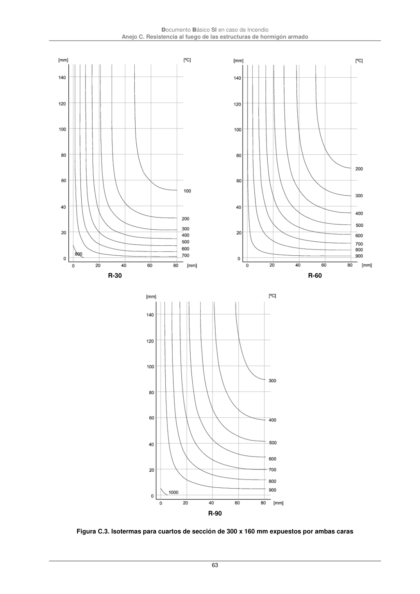

DB-SI · Fragmento de PDF p63 · versión 2025-03-04 · capa oficial
Formatos: JSON compacto · Markdown · PDF fuente
Ámbito del documento · texto del ámbito · documento y tablas
ID técnico a0171 · PDF pág. 63 · jerarquía no validada por persona · no es capítulo: sin_linea_de_encabezado · padre: raíz · literal original en el contenido: «Anejo C. Resistencia al fuego de las estructuras de hormigón armado»
Anejo C. Resistencia al fuego de las estructuras de hormigón armado 63

PDF fuente redistribuible: copia fiel enlazada en esta página (SHA256 verificado).